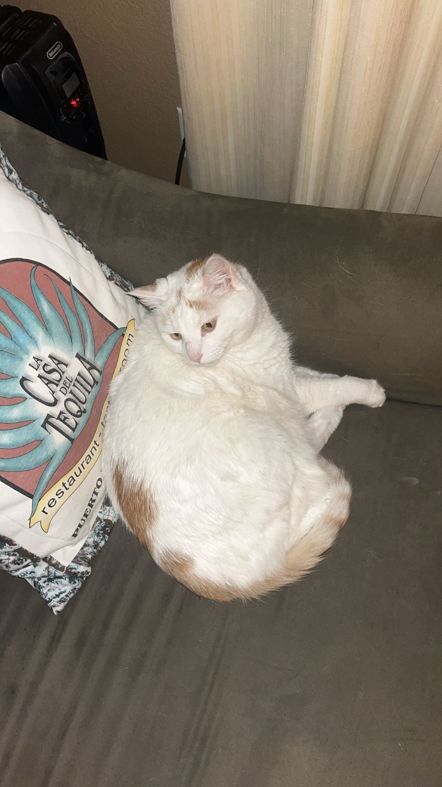

About Me
Hello! I am Eden! A math major at USD with a love for travel, my cat, and finding the perfect background music to study to. This page is built using every HTML media element.
Me
If you want to find me, I am probably at a desk with too many tabs open, a cat nearby, and a lo-fi playlist running in the background.
My Cat

This is Tica. She has strong opinions about where she sits and zero respect for open textbooks.
Click different parts of the photo to jump to other pages:
Travel
Don't let this video trick you! It is actually me smelling a flower!
Math Modeling Competition
I participated in a math modeling competition where teams are given a real-world problem and 96 hours to build and present a mathematical model. Below is my teams solution from that experience. I did it with my boyfriend... that was sure a test of the relationship!